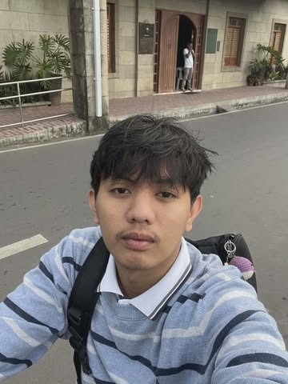
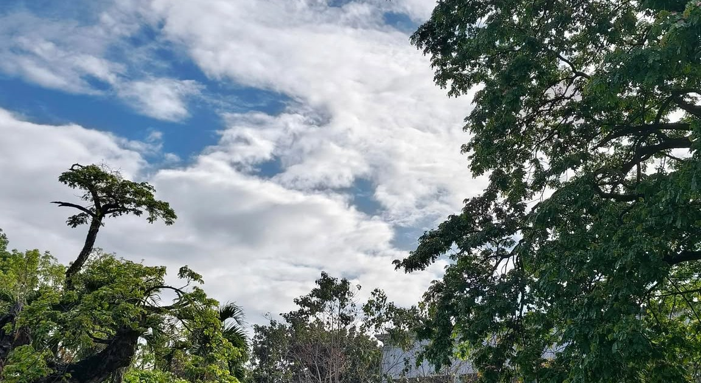
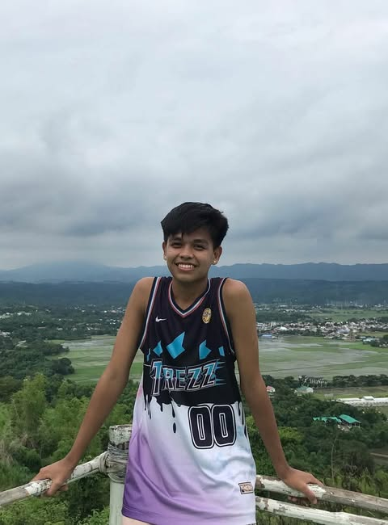
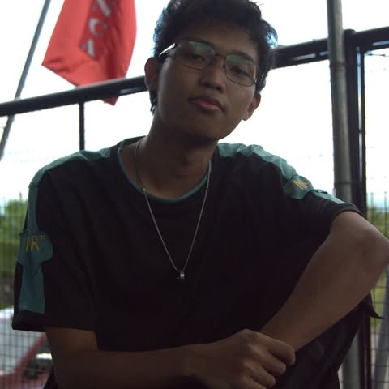
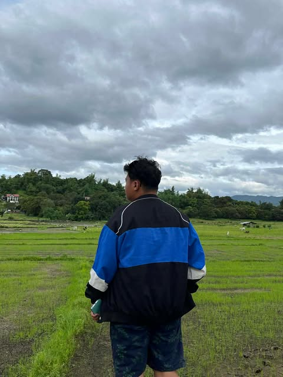

Lead Researcher
John Paul Ibay
Contributed to the overall planning of the project and helped organize the content structure of the webpage.


Meet the student-researchers behind the development of this webpage. Their work reflects collaboration, creativity, and a shared commitment to building a useful and accessible digital space for the URSM Campus Library.
The webpage was created through collaboration, planning, and shared responsibilities.
Each member contributed ideas to make the website visually clear, organized, and engaging.
The team aimed to present library information in a simple and accessible digital format.
This project was developed by dedicated student-researchers who combined research, design, and technical skills to create a webpage that supports the presentation of campus library information.
The student-researchers who created this webpage worked together to design a platform that highlights important information about the University of Rizal System Morong Campus Library. Their goal was to produce a clean, modern, and user-friendly webpage that reflects both academic purpose and visual quality. Through collaboration, creativity, and careful planning, the team transformed ideas into a digital project that can help users explore library-related content more easily.
Below are the student-researchers who contributed to the concept, content, and development of this webpage.

Contributed to the overall planning of the project and helped organize the content structure of the webpage.

Focused on layout design, visual consistency, and the presentation of information across the webpage.

Assisted in gathering, refining, and preparing relevant content to ensure clarity and academic value.

Contributed support to the development of the webpage structure and its responsive behavior.